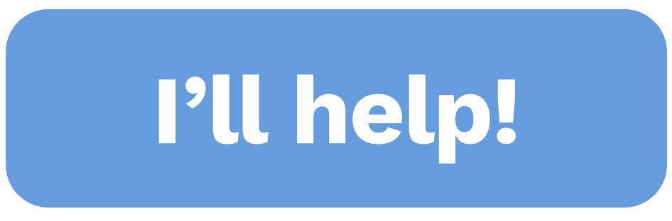
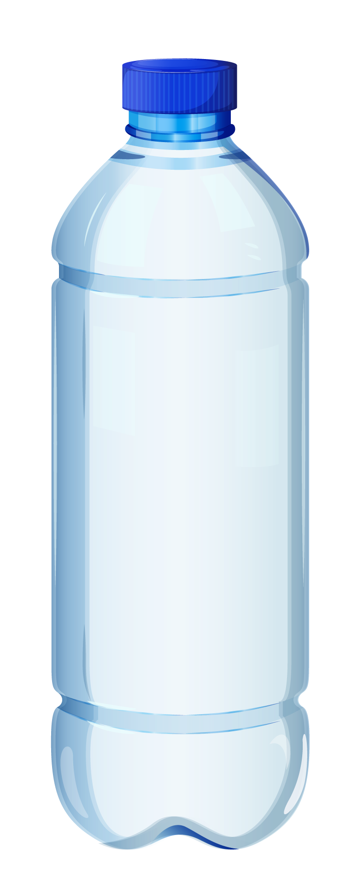
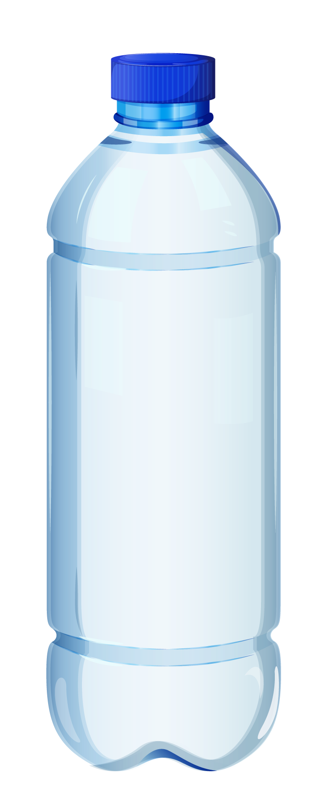

The theme we chose is marine-related; we chose this palette because it is the hue of water and sky.
For the sky, the blue light spreads more easily, and it comes to us from where the sun hits the atmosphere. Longer-wavelength visible light is easier for the oceans to get rid of, so the deeper they go, the darker blue the remaining light looks.
Example how we using color palette
The home page we use the #9ad2f5 color, it represents the sky and the color of the sea surface.

This color #16314b is use for background of the story page. It represents the bottom of the sea, the deeper you go, the darker the color of the sea

As a transitional serif design, Georgia shows a number of traditional features of "rational" serif typefaces from around the early 19th century, such as alternating thick and thin strokes, ball terminals and a vertical axis.Georgia has been described as having a typographic personality — even called friendly and intimate. Since the typeface is still legible at low resolutions, it creates an old-world charm with a modern appeal for online designs.
Georgia was designed for clarity on a computer monitor even at small sizes.[5] It features a large x-height (tall lower-case letters), and its thin strokes are thicker than would be common on a typeface designed for display use or the greater sharpness possible in print.
Verdana was created primarily for viewing on computer monitors. It is a very clear and legible font. This is partly due to the fact that its characters are fairly bold and wide. This also makes the use of Verdana a bit controversial. Since it looks great at small font sizes, substitution fonts can be quite illegible on systems that do not have Verdana installed.
Verdana is suitable for use on low-resolution output devices, such as laser printers. Avoid it for stuff that will be printed in offset or for documents in which a lot of text needs to be crammed in a limited amount of space.

.png)


 
